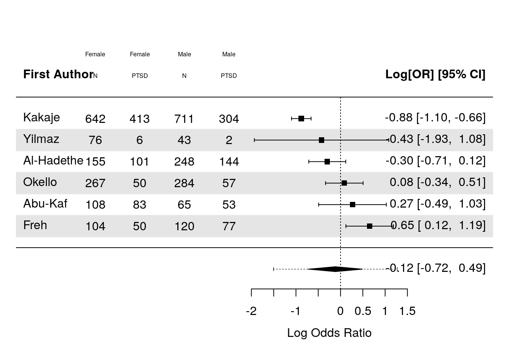

PTSD Meta-Analysis
Load Data and R Packages
All analyses were run in the docker container rockertidyverse432:6_ptsd_v5
R Packages we will use:
Load Data
Note that I’ve changed some of the raw data that is incorrect.
I’ve updated information from the Harb study in the code below which was incorrect.
I’ve also updated the data extraction for Kakaje usign the data in table 5.
Note that for study 1, the number of men and women (115, 134) adds up 249, but the total is listed as 252, which is due to missing gender information for 3 individuals in the original source.
Presumably this the same issue with study 15 (Pat-Horenczyk).
Data Description
participants - Number of Participants
male - Number of Males in the sample
mpercent - Percentage of males in the sample
Female - Number of Females in the sample
fpercent - Percentage of females in the sample
age - mean age of sample participants
ptsd - overall % of participants with PTSD in sample
mptsd - % of males with PTSD in sample
fptsd - % of females with PTSD in sample
Code
rm(list = ls())
df = haven::read_sav(file.path("data", "raw-data_11.03.24_final.sav")) %>%
rename_with(tolower) %>%
data.frame()
df %>%
rowid_to_column() %>%
knitr::kable()| rowid | participants | male | mpercent | female | fpercent | age | ptsd | mptsd | fptsd | war | aftermath | measure | country | econindex | authors | measures1 | qualityassessment | witnessingexplor | extrdander | witnessinghomedisruction | injury | deathofdearperson | deathofothers | harmfulevents | ownhomedesruction | risklevel | agemin | agemax | qualityl | qualitya |
|---|---|---|---|---|---|---|---|---|---|---|---|---|---|---|---|---|---|---|---|---|---|---|---|---|---|---|---|---|---|---|
| 1 | 252 | 115 | 45.60 | 134 | 53.20 | 14.70 | 35.50 | NA | NA | 1 | 9.00 | CRIES | Lebanon | 2 | Fayyad | 1 | 7 | 75.4 | 52.6 | 38.9 | 36.5 | 35.3 | 29.4 | 16.3 | 15.9 | 2 | 12 | 18 | 7 | 7 |
| 2 | 173 | NA | 37.50 | NA | 62.50 | 15.85 | 79.10 | 81.00 | 76.90 | 1 | 120.00 | CBCL | Syria | 1 | Abu-Kaf | 4 | 1 | NA | NA | NA | NA | NA | NA | NA | NA | 3 | 13 | 18 | 3 | 1 |
| 3 | 403 | NA | 61.50 | NA | 38.50 | 17.50 | 61.00 | 58.00 | 65.00 | 0 | NA | SPTSS | Iraq | 3 | Al-Hadethe | 5 | 4 | NA | NA | NA | NA | NA | NA | NA | NA | 3 | 16 | 19 | 4 | 4 |
| 4 | 797 | 469 | 58.80 | 328 | 41.20 | 19.90 | 49.81 | NA | NA | 0 | NA | PCL-5 | India | 2 | Bhat | 3 | 7 | 7.0 | 27.1 | NA | 0.0 | 16.1 | 26.1 | 5.3 | NA | 2 | 19 | 24 | 6 | 7 |
| 5 | 231 | NA | 41.60 | NA | 58.40 | 14.90 | 2.20 | NA | NA | 1 | 1.00 | CPSS | Burundi | 1 | Charak | 6 | 9 | NA | NA | NA | NA | NA | NA | NA | NA | 1 | 12 | 21 | 9 | 9 |
| 6 | 1029 | 496 | 48.20 | 533 | 51.80 | 13.71 | 53.50 | NA | NA | 0 | 12.00 | PTSDSS | Gaza Str | 4 | El-Khodary | 7 | 6 | 83.7 | NA | 88.3 | 88.4 | NA | NA | NA | NA | 2 | 11 | 17 | 7 | 6 |
| 7 | 224 | 120 | 53.60 | 104 | 46.40 | 15.80 | 55.80 | 64.51 | 48.00 | 1 | 120.00 | PTSDSS | Iraq | 3 | Freh | 7 | 7 | NA | NA | NA | 28.7 | 57.4 | NA | NA | 13.7 | 2 | 12 | 23 | 7 | 7 |
| 8 | 64 | NA | 37.00 | NA | 63.00 | 13.50 | 13.90 | 0.00 | 13.90 | 0 | NA | CRIES | Gaza Str | 4 | Harb | 1 | 3 | NA | NA | NA | NA | NA | NA | NA | NA | 3 | 12 | 16 | 3 | 3 |
| 9 | 1369 | NA | 52.80 | NA | NA | 16.38 | 53.00 | NA | NA | 1 | 108.00 | CRIES | Syria | 1 | Kakaje | 1 | 9 | NA | NA | NA | NA | NA | NA | NA | NA | 1 | 16 | 18 | 7 | 9 |
| 10 | 2314 | NA | 48.40 | NA | 51.60 | 13.50 | 15.00 | NA | NA | 1 | 10.00 | CPTS-RI | Israel | 4 | Lavi | 8 | 6 | NA | NA | NA | NA | NA | NA | NA | NA | 2 | 12 | 15 | 6 | 6 |
| 11 | 102 | NA | 39.22 | NA | 60.78 | 14.61 | 12.30 | NA | NA | 0 | NA | PCL-C | Colombia | 3 | Marroquin | 12 | 7 | NA | NA | NA | NA | NA | NA | NA | NA | 2 | 12 | 17 | 7 | 7 |
| 12 | 952 | NA | 54.70 | NA | 45.30 | 15.83 | 52.20 | NA | NA | 0 | NA | IES-R | Congo | 2 | Mels | 10 | 6 | NA | NA | NA | NA | NA | NA | NA | NA | 2 | 13 | 21 | 5 | 6 |
| 13 | 551 | 284 | 51.50 | 267 | 48.50 | 16.72 | 19.50 | 20.20 | 18.75 | 1 | 48.00 | IES-R | Uganda | 1 | Okello | 10 | 7 | NA | NA | NA | NA | NA | NA | NA | NA | 2 | 13 | 21 | 7 | 7 |
| 14 | 1463 | NA | 47.40 | NA | 52.60 | 13.00 | 5.30 | NA | NA | 0 | NA | HTQ | Ukraine | 2 | Osokina | 11 | 9 | 60.2 | NA | NA | 13.9 | NA | NA | NA | NA | 1 | 11 | 17 | 8 | 9 |
| 15 | 482 | NA | 46.70 | NA | 47.70 | 16.29 | 5.00 | NA | NA | 1 | 2.00 | UCLA-PTS | Israel | 4 | Pat-Horenczyk, | 2 | 3 | NA | NA | NA | NA | NA | NA | NA | NA | 3 | 12 | 18 | 3 | 3 |
| 16 | 233 | 70 | 30.04 | 163 | 69.60 | 13.49 | 40.00 | NA | NA | 0 | NA | UCLA-PTS | Israel | 4 | Shaheen | 2 | 3 | NA | NA | NA | NA | NA | NA | NA | NA | 3 | 11 | 16 | 5 | 3 |
| 17 | 1078 | 536 | 49.70 | 542 | 50.30 | 13.73 | 28.60 | NA | NA | 0 | NA | UCLA-PTS | Gaza Str | 4 | Shoshani | 2 | 7 | 7.1 | NA | NA | 16.1 | 6.5 | NA | NA | 1.0 | 2 | 13 | 15 | 7 | 7 |
| 18 | 358 | NA | 44.10 | NA | 55.90 | 16.70 | 29.80 | NA | NA | 1 | 3.00 | UCLA PTS | Gaza Str | 4 | Thabet | 2 | 4 | 88.5 | NA | NA | NA | NA | NA | NA | NA | 3 | 15 | 18 | 4 | 4 |
| 19 | 430 | NA | 43.00 | 245 | 57.00 | 15.50 | 61.20 | NA | NA | 1 | 57.00 | CRIES | Syria | 1 | Uysal | 1 | 9 | NA | NA | NA | NA | NA | NA | NA | NA | 1 | 12 | 18 | 9 | 9 |
| 20 | 119 | 43 | 36.10 | 76 | 63.90 | 13.50 | 6.70 | 4.70 | 7.90 | 1 | 46.32 | DSM-5 | Syria | 1 | Yilmaz | 9 | 3 | NA | NA | NA | NA | NA | NA | NA | NA | 3 | 12 | 16 | 3 | 3 |
| 21 | 314 | NA | 53.80 | NA | 45.20 | 13.37 | 46.20 | NA | NA | 0 | NA | UCLA-PTS | Israel | 4 | Shehadeh | 2 | 5 | NA | NA | NA | NA | NA | NA | NA | NA | 2 | 11 | 18 | 5 | 5 |
Compute Additional Variables
Add missing count data using the extracted percentages
Reformatted percentages so they’re from 0-1 and not 0-100
Created mean-centered age variable
Fixed error on the Harb study where males were not measured in their PTSD
Create 3-part quality assessment (high, medium, low)
Code
# df$male_plus_female_percent = df$mpercent + df$fpercent
df$mpercent = df$mpercent/100
df$fpercent = df$fpercent/100
df$ptsd = df$ptsd/100
df$mptsd = df$mptsd/100
df$fptsd = df$fptsd/100
df$authors = as.character(df$authors)
df$aftermath = df$aftermath/12
df$male[is.na(df$male)] = round(
df$participants[is.na(df$male)]*df$mpercent[is.na(df$male)]
)
df$female[is.na(df$female)] = round(
df$participants[is.na(df$female)]*df$fpercent[is.na(df$female)]
)
df$ptsd_n = round(df$ptsd*df$participants)
df$authors[df$authors == "Marroquin"] = "Rivera"
df$authors[grep("^Pat",df$authors)] = "Pat-Horenczyk"
df$war[df$authors == "El-Khodary"] = 1
table(df$aftermath, df$war, useNA = "always")
0 1 <NA>
0.0833333333333333 0 1 0
0.166666666666667 0 1 0
0.25 0 1 0
0.75 0 1 0
0.833333333333333 0 1 0
1 0 1 0
3.86 0 1 0
4 0 1 0
4.75 0 1 0
9 0 1 0
10 0 2 0
<NA> 9 0 0Code
df$measure[df$measure == "UCLA PTS"] = "UCLA-PTS"
df$measure_factor = factor(paste0("M",df$measures1))
df$qualityassessment_factor = factor(paste0("Quality Rating: ",df$qualityassessment))
harb_row = which(df$authors=="Harb")
df$participants[harb_row] = 40
df$male[harb_row] = 0
df$mpercent[harb_row] = 0
df$female[harb_row] = 40
df$fpercent[harb_row] = 1
df$mptsd[harb_row] = NA
df$ptsd[harb_row] = .90
kakaje_row = which(df$authors=="Kakaje")
df$participants[kakaje_row] = 407+304+229+413
df$male[kakaje_row] = 407+304
df$female[kakaje_row] = 229+413
df$mpercent[kakaje_row] = df$male[kakaje_row] /
(df$male[kakaje_row] + df$female[kakaje_row])
df$fpercent[kakaje_row] = df$female[kakaje_row] /
(df$male[kakaje_row] + df$female[kakaje_row])
df$mptsd[kakaje_row] = 304/(407+304)
df$fptsd[kakaje_row] = 413/(229+413)
df$ptsd[kakaje_row] = (304+413)/(407+304+229+413)
qa = as.numeric(df$qualityassessment)
df$qualityassessment_3factor = dplyr::case_when(
(qa >= 0 ) & (qa <= 4) ~ "High Risk",
(qa >= 5 ) & (qa <= 8) ~ "Medium Risk",
(qa >= 9 ) & (qa <= 12) ~ "Low Risk",
.default = NA_character_
) %>%
as.factor()
df = df %>%
# filter(!exclude) %>%
select("authors","participants","ptsd_n",everything()) %>%
mutate(
age_centered = scale(age, center = TRUE, scale = FALSE),
aftermath_centered = scale(aftermath, center = TRUE, scale = FALSE),
quality_centered = scale(qualityassessment, center = TRUE, scale = TRUE)
)Cleaned Dataset
Code
| rowid | authors | participants | ptsd_n | male | mpercent | female | fpercent | age | ptsd | mptsd | fptsd | war | aftermath | measure | country | econindex | measures1 | qualityassessment | witnessingexplor | extrdander | witnessinghomedisruction | injury | deathofdearperson | deathofothers | harmfulevents | ownhomedesruction | risklevel | agemin | agemax | qualityl | qualitya | measure_factor | qualityassessment_factor | qualityassessment_3factor | age_centered | aftermath_centered | quality_centered |
|---|---|---|---|---|---|---|---|---|---|---|---|---|---|---|---|---|---|---|---|---|---|---|---|---|---|---|---|---|---|---|---|---|---|---|---|---|---|
| 1 | Fayyad | 252 | 89 | 115 | 0.456 | 134 | 0.532 | 14.70 | 0.355 | NA | NA | 1 | 0.750 | CRIES | Lebanon | 2 | 1 | 7 | 75.4 | 52.6 | 38.9 | 36.5 | 35.3 | 29.4 | 16.3 | 15.9 | 2 | 12 | 18 | 7 | 7 | M1 | Quality Rating: 7 | Medium Risk | -0.4657143 | -2.9744444 | 0.50478790 |
| 2 | Abu-Kaf | 173 | 137 | 65 | 0.375 | 108 | 0.625 | 15.85 | 0.791 | 0.810 | 0.769 | 1 | 10.000 | CBCL | Syria | 1 | 4 | 1 | NA | NA | NA | NA | NA | NA | NA | NA | 3 | 13 | 18 | 3 | 1 | M4 | Quality Rating: 1 | High Risk | 0.6842857 | 6.2755556 | -2.03934313 |
| 3 | Al-Hadethe | 403 | 246 | 248 | 0.615 | 155 | 0.385 | 17.50 | 0.610 | 0.580 | 0.650 | 0 | NA | SPTSS | Iraq | 3 | 5 | 4 | NA | NA | NA | NA | NA | NA | NA | NA | 3 | 16 | 19 | 4 | 4 | M5 | Quality Rating: 4 | High Risk | 2.3342857 | NA | -0.76727761 |
| 4 | Bhat | 797 | 397 | 469 | 0.588 | 328 | 0.412 | 19.90 | 0.498 | NA | NA | 0 | NA | PCL-5 | India | 2 | 3 | 7 | 7.0 | 27.1 | NA | 0.0 | 16.1 | 26.1 | 5.3 | NA | 2 | 19 | 24 | 6 | 7 | M3 | Quality Rating: 7 | Medium Risk | 4.7342857 | NA | 0.50478790 |
| 5 | Charak | 231 | 5 | 96 | 0.416 | 135 | 0.584 | 14.90 | 0.022 | NA | NA | 1 | 0.083 | CPSS | Burundi | 1 | 6 | 9 | NA | NA | NA | NA | NA | NA | NA | NA | 1 | 12 | 21 | 9 | 9 | M6 | Quality Rating: 9 | Low Risk | -0.2657143 | -3.6411111 | 1.35283158 |
| 6 | El-Khodary | 1029 | 551 | 496 | 0.482 | 533 | 0.518 | 13.71 | 0.535 | NA | NA | 1 | 1.000 | PTSDSS | Gaza Str | 4 | 7 | 6 | 83.7 | NA | 88.3 | 88.4 | NA | NA | NA | NA | 2 | 11 | 17 | 7 | 6 | M7 | Quality Rating: 6 | Medium Risk | -1.4557143 | -2.7244444 | 0.08076606 |
| 7 | Freh | 224 | 125 | 120 | 0.536 | 104 | 0.464 | 15.80 | 0.558 | 0.645 | 0.480 | 1 | 10.000 | PTSDSS | Iraq | 3 | 7 | 7 | NA | NA | NA | 28.7 | 57.4 | NA | NA | 13.7 | 2 | 12 | 23 | 7 | 7 | M7 | Quality Rating: 7 | Medium Risk | 0.6342857 | 6.2755556 | 0.50478790 |
| 8 | Harb | 40 | 9 | 0 | 0.000 | 40 | 1.000 | 13.50 | 0.900 | NA | 0.139 | 0 | NA | CRIES | Gaza Str | 4 | 1 | 3 | NA | NA | NA | NA | NA | NA | NA | NA | 3 | 12 | 16 | 3 | 3 | M1 | Quality Rating: 3 | High Risk | -1.6657143 | NA | -1.19129945 |
| 9 | Kakaje | 1353 | 726 | 711 | 0.525 | 642 | 0.475 | 16.38 | 0.530 | 0.428 | 0.643 | 1 | 9.000 | CRIES | Syria | 1 | 1 | 9 | NA | NA | NA | NA | NA | NA | NA | NA | 1 | 16 | 18 | 7 | 9 | M1 | Quality Rating: 9 | Low Risk | 1.2142857 | 5.2755556 | 1.35283158 |
| 10 | Lavi | 2314 | 347 | 1120 | 0.484 | 1194 | 0.516 | 13.50 | 0.150 | NA | NA | 1 | 0.833 | CPTS-RI | Israel | 4 | 8 | 6 | NA | NA | NA | NA | NA | NA | NA | NA | 2 | 12 | 15 | 6 | 6 | M8 | Quality Rating: 6 | Medium Risk | -1.6657143 | -2.8911111 | 0.08076606 |
| 11 | Rivera | 102 | 13 | 40 | 0.392 | 62 | 0.608 | 14.61 | 0.123 | NA | NA | 0 | NA | PCL-C | Colombia | 3 | 12 | 7 | NA | NA | NA | NA | NA | NA | NA | NA | 2 | 12 | 17 | 7 | 7 | M12 | Quality Rating: 7 | Medium Risk | -0.5557143 | NA | 0.50478790 |
| 12 | Mels | 952 | 497 | 521 | 0.547 | 431 | 0.453 | 15.83 | 0.522 | NA | NA | 0 | NA | IES-R | Congo | 2 | 10 | 6 | NA | NA | NA | NA | NA | NA | NA | NA | 2 | 13 | 21 | 5 | 6 | M10 | Quality Rating: 6 | Medium Risk | 0.6642857 | NA | 0.08076606 |
| 13 | Okello | 551 | 107 | 284 | 0.515 | 267 | 0.485 | 16.72 | 0.195 | 0.202 | 0.188 | 1 | 4.000 | IES-R | Uganda | 1 | 10 | 7 | NA | NA | NA | NA | NA | NA | NA | NA | 2 | 13 | 21 | 7 | 7 | M10 | Quality Rating: 7 | Medium Risk | 1.5542857 | 0.2755556 | 0.50478790 |
| 14 | Osokina | 1463 | 78 | 693 | 0.474 | 770 | 0.526 | 13.00 | 0.053 | NA | NA | 0 | NA | HTQ | Ukraine | 2 | 11 | 9 | 60.2 | NA | NA | 13.9 | NA | NA | NA | NA | 1 | 11 | 17 | 8 | 9 | M11 | Quality Rating: 9 | Low Risk | -2.1657143 | NA | 1.35283158 |
| 15 | Pat-Horenczyk | 482 | 24 | 225 | 0.467 | 230 | 0.477 | 16.29 | 0.050 | NA | NA | 1 | 0.167 | UCLA-PTS | Israel | 4 | 2 | 3 | NA | NA | NA | NA | NA | NA | NA | NA | 3 | 12 | 18 | 3 | 3 | M2 | Quality Rating: 3 | High Risk | 1.1242857 | -3.5577778 | -1.19129945 |
| 16 | Shaheen | 233 | 93 | 70 | 0.300 | 163 | 0.696 | 13.49 | 0.400 | NA | NA | 0 | NA | UCLA-PTS | Israel | 4 | 2 | 3 | NA | NA | NA | NA | NA | NA | NA | NA | 3 | 11 | 16 | 5 | 3 | M2 | Quality Rating: 3 | High Risk | -1.6757143 | NA | -1.19129945 |
| 17 | Shoshani | 1078 | 308 | 536 | 0.497 | 542 | 0.503 | 13.73 | 0.286 | NA | NA | 0 | NA | UCLA-PTS | Gaza Str | 4 | 2 | 7 | 7.1 | NA | NA | 16.1 | 6.5 | NA | NA | 1.0 | 2 | 13 | 15 | 7 | 7 | M2 | Quality Rating: 7 | Medium Risk | -1.4357143 | NA | 0.50478790 |
| 18 | Thabet | 358 | 107 | 158 | 0.441 | 200 | 0.559 | 16.70 | 0.298 | NA | NA | 1 | 0.250 | UCLA-PTS | Gaza Str | 4 | 2 | 4 | 88.5 | NA | NA | NA | NA | NA | NA | NA | 3 | 15 | 18 | 4 | 4 | M2 | Quality Rating: 4 | High Risk | 1.5342857 | -3.4744444 | -0.76727761 |
| 19 | Uysal | 430 | 263 | 185 | 0.430 | 245 | 0.570 | 15.50 | 0.612 | NA | NA | 1 | 4.750 | CRIES | Syria | 1 | 1 | 9 | NA | NA | NA | NA | NA | NA | NA | NA | 1 | 12 | 18 | 9 | 9 | M1 | Quality Rating: 9 | Low Risk | 0.3342857 | 1.0255556 | 1.35283158 |
| 20 | Yilmaz | 119 | 8 | 43 | 0.361 | 76 | 0.639 | 13.50 | 0.067 | 0.047 | 0.079 | 1 | 3.860 | DSM-5 | Syria | 1 | 9 | 3 | NA | NA | NA | NA | NA | NA | NA | NA | 3 | 12 | 16 | 3 | 3 | M9 | Quality Rating: 3 | High Risk | -1.6657143 | 0.1355556 | -1.19129945 |
| 21 | Shehadeh | 314 | 145 | 169 | 0.538 | 142 | 0.452 | 13.37 | 0.462 | NA | NA | 0 | NA | UCLA-PTS | Israel | 4 | 2 | 5 | NA | NA | NA | NA | NA | NA | NA | NA | 2 | 11 | 18 | 5 | 5 | M2 | Quality Rating: 5 | Medium Risk | -1.7957143 | NA | -0.34325578 |
Calculate Effect Sizes
R1) Overall Prevalance (No moderations)
Code
Random-Effects Model (k = 21; tau^2 estimator: ML)
logLik deviance AIC BIC AICc
-62.9144 0.7498 129.8287 131.9178 130.4954
tau^2 (estimated amount of total heterogeneity): 1.6768
tau (square root of estimated tau^2 value): 1.2949
I^2 (total heterogeneity / total variability): 99.44%
H^2 (total variability / sampling variability): 177.97
Tests for Heterogeneity:
Wld(df = 20) = 1928.4679, p-val < .0001
LRT(df = 20) = 2748.8914, p-val < .0001
Model Results:
estimate se tval df pval ci.lb ci.ub
-0.8766 0.2855 -3.0700 20 0.0060 -1.4723 -0.2810 **
---
Signif. codes: 0 '***' 0.001 '**' 0.01 '*' 0.05 '.' 0.1 ' ' 1Prediction intervals on logit scale
These results are not helpful as they’re on the logit scale, so we need to transform using the logit function below!
Code
predict(results_glmm,
level = .95
)
pred se ci.lb ci.ub pi.lb pi.ub
-0.8766 0.2855 -1.4723 -0.2810 -3.6427 1.8894 Prediction intervals on percentage scale
These results show that the AVERAGE prevalence is 26% 95%CI [.17, 37]
However the prediction intervals are very wide 95% CI [.02, .84].
Code
predict(results_glmm,
level = .95,
transf=transf.ilogit)
pred ci.lb ci.ub pi.lb pi.ub
0.2939 0.1866 0.4302 0.0255 0.8687 Forest Plot
R2) Within-Study Comparison of Men and Women
Prepare Dataset
Code
# df_gender = df %>%
# metafor::escalc(
# data = .,
# ai = `male_ptsd`,
# n1i = `male_n`,
# ci = `female_ptsd`,
# n2i = `female_n`,
# measure = "PLO"
# )
df_gender = df %>%
filter(!is.na(mptsd) & !is.na(fptsd)) %>%
mutate(
male_n = male,
male_ptsd = round(male*mptsd),
female_n = female,
female_ptsd = round(female*fptsd)
) %>%
select(authors, male_n, male_ptsd, female_n, female_ptsd)
df_gender = df_gender %>%
metafor::escalc(
data = .,
ai = `male_ptsd`,
n1i = `male_n`,
ci = `female_ptsd`,
n2i = `female_n`,
measure = "OR",
var.names = c("log.odds", "log.odds.se")
)
df_gender %>%
knitr::kable()| authors | male_n | male_ptsd | female_n | female_ptsd | log.odds | log.odds.se |
|---|---|---|---|---|---|---|
| Abu-Kaf | 65 | 53 | 108 | 83 | 0.2854205 | 0.1542495 |
| Al-Hadethe | 248 | 144 | 155 | 101 | -0.3007141 | 0.0449793 |
| Freh | 120 | 77 | 104 | 50 | 0.6595663 | 0.0747613 |
| Kakaje | 711 | 304 | 642 | 413 | -0.8815111 | 0.0125346 |
| Okello | 284 | 57 | 267 | 50 | 0.0859756 | 0.0465574 |
| Yilmaz | 43 | 2 | 76 | 6 | -0.5636891 | 0.7053426 |
Meta-Analysis
Code
results_glmm = rma.glmm(
ai = `male_ptsd`,
n1i = `male_n`,
ci = `female_ptsd`,
n2i = `female_n`,
data = df_gender,
measure="OR",
model = "CM.EL",
verbose = FALSE,
# method = "ML",
# intercept = FALSE,
# mods = ~ 0 + gender_male + gender_female,
to = "all",
test = "t" # This is recommended here metafor/html/misc-recs.html
# nAGQ = 1
)
summary(results_glmm)
Random-Effects Model (k = 6; tau^2 estimator: ML)
Model Type: Conditional Model with Exact Likelihood
logLik deviance AIC BIC AICc
-20.5090 14.5067 45.0181 44.6016 49.0181
tau^2 (estimated amount of total heterogeneity): 0.2357 (SE = 0.1699)
tau (square root of estimated tau^2 value): 0.4855
I^2 (total heterogeneity / total variability): 81.56%
H^2 (total variability / sampling variability): 5.42
Tests for Heterogeneity:
Wld(df = 5) = 41.4938, p-val < .0001
LRT(df = 5) = 42.1029, p-val < .0001
Model Results:
estimate se tval df pval ci.lb ci.ub
-0.1162 0.2356 -0.4934 5 0.6426 -0.7218 0.4893
---
Signif. codes: 0 '***' 0.001 '**' 0.01 '*' 0.05 '.' 0.1 ' ' 1Code
predict(results_glmm, transf=exp, digits=3)
pred ci.lb ci.ub pi.lb pi.ub
0.890 0.486 1.631 0.222 3.564 Forest Plot
Code
pdf(file.path("plots","gender_forest.pdf"), width = 10, height = 5) # Adjust the size as needed
res = results_glmm
# forestplot =
forest(
results_glmm,
# transf = transf.ilogit,
slab = authors,
addpred = TRUE,
steps = 10,
order = "obs",
ilab = cbind(female_n, female_ptsd, male_n, male_ptsd),
header="First Author",
ilab.xpos=(-9:-6)+3.5,
mlab="",
shade = TRUE
)
text((-9:-6)+3.5, results_glmm$k+3, c("Female", "Female", "Male", "Male"))
text((-9:-6)+3.5, results_glmm$k+2, c("N", "PTSD"))
text(-5.6, -0, pos=1, cex=1, bquote(paste(
"RE Model (K = ", .(fmtx(res$k, digits=0)),
", df = ", .(res$k - res$p), ", ",
.(fmtp(res$QEp, digits=3, pname="p", add0=TRUE, sep=TRUE, equal=TRUE)), "",
I^2, " = ", .(fmtx(res$I2, digits=1)), "%)")))
dev.off()png
2 Code
forest(
results_glmm,
# transf = transf.ilogit,
slab = authors,
addpred = TRUE,
steps = 10,
order = "obs",
ilab = cbind(female_n, female_ptsd, male_n, male_ptsd),
header="First Author",
ilab.xpos=(-9:-6)+3.5,
mlab="",
shade = TRUE
)
text((-9:-6)+3.5, cex = .5,results_glmm$k+3, c("Female", "Female", "Male", "Male"))
text((-9:-6)+3.5, cex = .5, results_glmm$k+2, c("N", "PTSD"))
The above effect is negative, which here indicates that PTSD rates are slightly here in women across the studies, but the effect is not significant.
R3) Meta-Regressions - age, ongoing war, method of measurement, country income level
Code
#| echo: true
#| output: false
#| warning: false
#|
moderation_models = list()
moderation_models[["Age"]] = rma.glmm(
xi = `ptsd_n`,
ni = `participants`,
data = df,
measure="PLO",
verbose = FALSE,
method = "ML",
# intercept = FALSE,
mods = ~ 1 + age_centered,
to = "all",
test = "t" # This is recommended here metafor/html/misc-recs.html
)
moderation_models[["War"]] = rma.glmm(
xi = `ptsd_n`,
ni = `participants`,
data = df,
measure="PLO",
verbose = FALSE,
method = "ML",
# intercept = FALSE,
mods = ~ 1 + war,
to = "all",
test = "t" # This is recommended here metafor/html/misc-recs.html
)
moderation_models[["Aftermath"]] = rma.glmm(
xi = `ptsd_n`,
ni = `participants`,
data = df,
measure="PLO",
verbose = FALSE,
method = "ML",
# intercept = FALSE,
mods = ~ 1 + aftermath_centered,
to = "all",
test = "t" # This is recommended here metafor/html/misc-recs.html
)Warning: 9 studies with NAs omitted from model fitting.Warning: Some yi/vi values are NA.Code
moderation_models[["Measure"]] = rma.glmm(
xi = `ptsd_n`,
ni = `participants`,
data = df,
measure="PLO",
verbose = FALSE,
method = "ML",
# intercept = FALSE,
mods = ~ 1 + measure,
to = "all",
test = "t" # This is recommended here metafor/html/misc-recs.html
)Warning in checkConv(attr(opt, "derivs"), opt$par, ctrl = control$checkConv, :
Model failed to converge with max|grad| = 0.0021387 (tol = 0.002, component 1)Code
moderation_models[["Economic"]] = rma.glmm(
xi = `ptsd_n`,
ni = `participants`,
data = df,
measure="PLO",
verbose = FALSE,
method = "ML",
# intercept = FALSE,
mods = ~ 1 + factor(econindex),
to = "all",
test = "t" # This is recommended here metafor/html/misc-recs.html
)
moderation_models[["Quality"]] = rma.glmm(
xi = `ptsd_n`,
ni = `participants`,
data = df,
measure="PLO",
verbose = FALSE,
method = "ML",
# intercept = FALSE,
mods = ~ 1 + qualityassessment_3factor,
to = "all",
test = "t" # This is recommended here metafor/html/misc-recs.html
)
moderation_models_nointercept = list()
moderation_models_nointercept[["Age"]] = rma.glmm(
xi = `ptsd_n`,
ni = `participants`,
data = df,
measure="PLO",
verbose = FALSE,
method = "ML",
# intercept = FALSE,
mods = ~ 1 + age_centered,
to = "all",
test = "t" # This is recommended here metafor/html/misc-recs.html
)
moderation_models_nointercept[["War"]] = rma.glmm(
xi = `ptsd_n`,
ni = `participants`,
data = df,
measure="PLO",
verbose = FALSE,
method = "ML",
# intercept = FALSE,
mods = ~ 0 + factor(war),
to = "all",
test = "t" # This is recommended here metafor/html/misc-recs.html
)
moderation_models_nointercept[["Aftermath"]] = rma.glmm(
xi = `ptsd_n`,
ni = `participants`,
data = df,
measure="PLO",
verbose = FALSE,
method = "ML",
# intercept = FALSE,
mods = ~ 1 + aftermath_centered,
to = "all",
test = "t" # This is recommended here metafor/html/misc-recs.html
)Warning: 9 studies with NAs omitted from model fitting.
Warning: Some yi/vi values are NA.Code
moderation_models_nointercept[["Measure"]] = rma.glmm(
xi = `ptsd_n`,
ni = `participants`,
data = df,
measure="PLO",
verbose = FALSE,
method = "ML",
# intercept = FALSE,
mods = ~ 0 + measure,
to = "all",
test = "t" # This is recommended here metafor/html/misc-recs.html
)
moderation_models_nointercept[["Economic"]] = rma.glmm(
xi = `ptsd_n`,
ni = `participants`,
data = df,
measure="PLO",
verbose = FALSE,
method = "ML",
# intercept = FALSE,
mods = ~ 0 + factor(econindex),
to = "all",
test = "t" # This is recommended here metafor/html/misc-recs.html
)
moderation_models_nointercept[["Quality"]] = rma.glmm(
xi = `ptsd_n`,
ni = `participants`,
data = df,
measure="PLO",
verbose = FALSE,
method = "ML",
# intercept = FALSE,
mods = ~ 0 + qualityassessment_3factor,
to = "all",
test = "t" # This is recommended here metafor/html/misc-recs.html
)Create Table
Code
# moderation_models[[2]]
moderation_results = list()
for (i in 1:length(moderation_models)){
moderation_results[[i]] = list()
moderation_results[[i]][["QM"]] = moderation_models[[i]]$QM
moderation_results[[i]][["QMdf_1"]] = moderation_models[[i]]$QMdf[1]
moderation_results[[i]][["QMdf_2"]] = moderation_models[[i]]$QMdf[2]
moderation_results[[i]][["QMp"]] = moderation_models[[i]]$QMp
moderation_results[[i]][["N Studies"]] = length(moderation_models[[i]]$ni)
moderation_results[[i]][["N Participants"]] = sum(moderation_models[[i]]$ni)
}
moderation_df <- do.call(rbind, lapply(moderation_results, function(x) as.data.frame(t(unlist(x)))))
rownames(moderation_df) = names(moderation_models)
moderation_df %>%
gt(rowname_col = "Moderation Test",
rownames_to_stub = TRUE) %>%
gt::tab_header(title = "Moderation Tests") %>%
fmt_number(columns = c(QM,QMp), decimals = 3)| Moderation Tests | ||||||
|---|---|---|---|---|---|---|
| QM | QMdf_1 | QMdf_2 | QMp | N Studies | N Participants | |
| Age | 2.661 | 1 | 19 | 0.119 | 21 | 12898 |
| War | 0.097 | 1 | 19 | 0.758 | 21 | 12898 |
| Aftermath | 8.812 | 1 | 10 | 0.014 | 12 | 7516 |
| Measure | 6.492 | 11 | 9 | 0.005 | 21 | 12898 |
| Economic | 0.172 | 3 | 17 | 0.914 | 21 | 12898 |
| Quality | 0.638 | 2 | 18 | 0.540 | 21 | 12898 |
Code
moderation_coef = list()
for (i in 1:length(moderation_models_nointercept)){
moderation_coef[[i]] = list()
moderation_coef[[i]][["QM"]] = moderation_models_nointercept[[i]]
moderation_coef[[i]] = data.frame(
model = names(moderation_models_nointercept)[i],
group = rownames(moderation_models_nointercept[[i]]$beta),
b = moderation_models_nointercept[[i]][c("b")],
ci.lb = moderation_models_nointercept[[i]][c("ci.lb")],
ci.ub = moderation_models_nointercept[[i]][c("ci.ub")],
se = moderation_models_nointercept[[i]][c("se")],
p = moderation_models_nointercept[[i]][c("pval")]
)
# moderation_coef[[i]] = moderation_coef[[i]] %>%
# mutate(across(c(b, ci.lb, ci.ub), ~plogis(.x)))
}
moderation_coef[[match("War", names(moderation_models))]]$group = c("Ongoing War","Aftermath")
moderation_coef %>%
do.call("bind_rows",.) %>%
`rownames<-`((NULL)) %>%
select(-pval) %>%
select(-se) %>%
mutate(group = gsub("measure","", group)) %>%
mutate(group = gsub("factor\\(econindex\\)","", group)) %>%
mutate(group = gsub("qualityassessment_factor","", group)) %>%
mutate(group = gsub("intrcpt","Intercept", group)) %>%
gt() %>%
cols_hide("model") %>%
tab_row_group(
label = "Ongoing / Aftermath War, F(df1 = 1, df2 = 19) = .10, p = .76",
rows = which(model=="War")
) %>%
tab_row_group(
label = "Mean Sample Age, F(df1 = 1, df2 = 19) = 2.66, p = .12",
rows = which(model=="Age")
) %>%
tab_row_group(
label = "PTSD Measure, F(df1 = 11, df2 = 9) = 6.49, p = .005",
rows = which(model=="Measure")
) %>%
tab_row_group(
label = "Economic Index, F(df1 = 3, df2 = 17) = 0.17, p = .91",
rows = which(model=="Economic")
) %>%
tab_row_group(
label = "Aftermath Length, F(df1 = 1, df2 = 10) = 8.81, p = .014",
rows = which(model=="Aftermath")
) %>%
tab_row_group(
label = "Quality Assessment, F(df1 = 2, df2 = 18) = 0.639, p = .54",
rows = which(model=="Quality")
) %>%
fmt_percent(
rows = (model != "Age") & (model != "Aftermath"),
columns = everything(),
decimals = 1,
use_seps = FALSE
) %>%
fmt(
rows = (model != "Age") | (model != "Aftermath"),
columns = c(b, ci.lb, ci.ub),
fns = function(x) {paste0(signif((plogis(x)*100),3),"%")}
) %>%
fmt(
rows = (model == "Age") | (model == "Aftermath"),
columns = c(b, ci.lb, ci.ub),
fns = function(x) {paste0("b = ", gbtoolbox::apa_num(as.numeric(x)))}
)| group | b | ci.lb | ci.ub |
|---|---|---|---|
| Quality Assessment, F(df1 = 2, df2 = 18) = 0.639, p = .54 | |||
| qualityassessment_3factorHigh Risk | 29.1% | 12.9% | 53.2% |
| qualityassessment_3factorLow Risk | 18.5% | 5.61% | 46.6% |
| qualityassessment_3factorMedium Risk | 34.8% | 18.7% | 55.3% |
| Aftermath Length, F(df1 = 1, df2 = 10) = 8.81, p = .014 | |||
| Intercept | b = -.95 | b = -1.67 | b = -.23 |
| aftermath_centered | b = .26 | b = .06 | b = .45 |
| Economic Index, F(df1 = 3, df2 = 17) = 0.17, p = .91 | |||
| 1 | 28% | 11.2% | 54.3% |
| 2 | 29.9% | 9.95% | 62.3% |
| 3 | 40.1% | 12.2% | 76.4% |
| 4 | 26.6% | 12.2% | 48.7% |
| PTSD Measure, F(df1 = 11, df2 = 9) = 6.49, p = .005 | |||
| CBCL | 79.3% | 49.2% | 93.8% |
| CPSS | 2.04% | 0.389% | 9.99% |
| CPTS-RI | 15% | 4.51% | 39.7% |
| CRIES | 43.9% | 28.2% | 60.9% |
| DSM-5 | 6.47% | 1.44% | 24.7% |
| HTQ | 5.3% | 1.45% | 17.6% |
| IES-R | 34.1% | 16.8% | 56.9% |
| PCL-5 | 49.8% | 21% | 78.8% |
| PCL-C | 12.5% | 3.15% | 38.4% |
| PTSDSS | 54.7% | 32% | 75.6% |
| SPTSS | 61.1% | 29.3% | 85.6% |
| UCLA-PTS | 26.2% | 16.3% | 39.3% |
| Mean Sample Age, F(df1 = 1, df2 = 19) = 2.66, p = .12 | |||
| Intercept | b = -.88 | b = -1.44 | b = -.32 |
| age_centered | b = .26 | b = -.07 | b = .59 |
| Ongoing / Aftermath War, F(df1 = 1, df2 = 19) = .10, p = .76 | |||
| Ongoing War | 31.6% | 15.7% | 53.4% |
| Aftermath | 27.8% | 14.9% | 45.9% |
Additional Plots
Age
Code
df %>%
arrange((prev_plo_var))%>%
mutate(war_factor = factor(war, levels = 0:1, labels = c("On Going", "Aftermath")),
war_factor = forcats::fct_explicit_na(war_factor, na_level = "Missing")) %>%
ggplot(aes(y = prev_pr, x = age)) +
geom_point(aes(size = 1/prev_plo_var, shape = war_factor,col = war_factor)) +
labs(x = "Mean Sample Age (Years)", y = "PTSD Prevalence",
col = "War", shape = "War") +
ggrepel::geom_text_repel(aes(label = authors), size = 3) +
guides(size = "none") Warning: There was 1 warning in `mutate()`.
ℹ In argument: `war_factor = forcats::fct_explicit_na(war_factor, na_level =
"Missing")`.
Caused by warning:
! `fct_explicit_na()` was deprecated in forcats 1.0.0.
ℹ Please use `fct_na_value_to_level()` instead.
Code
table(df$war)
0 1
9 12 Aftermath plot
Code
intercept = moderation_models$Aftermath$b[1,1]
slope = moderation_models$Aftermath$b[2,1]
df %>%
arrange((prev_plo_var))%>%
filter(!is.na(aftermath)) %>%
mutate(war_factor = factor(war, levels = 0:1, labels = c("On Going", "Aftermath")),
war_factor = forcats::fct_explicit_na(war_factor, na_level = "Missing")) %>%
ggplot(aes(
y = prev_pr,
x = aftermath,
col = authors
)) +
geom_point(
aes(
size = 1/prev_plo_var
)) +
labs(
x = "Aftermath Length (Years)",
y = "PTSD Prevalence",
col = "War",
shape = "War"
) +
ggrepel::geom_text_repel(
seed = 10,
aes(
label = authors
),
size = 3
) +
# Note theat the analyses use aftermath centered, so we need to adjust for that here
geom_function(
fun = function(x) plogis(intercept + slope*(x - mean(df$aftermath, na.rm = TRUE))),
colour = "black",
linewidth = 1
# xlim = c(-4,7)
) +
guides(size = "none", col = "none") +
scale_y_continuous(
breaks = (seq(0,1,by=.1)), # Labels for the ticks, in their original, untransformed units
labels = paste0((0:10)*10,"%")
) +
scale_color_manual(values = c("#E69F00", "#56B4E9", "#009E73", "#0072B2", "#0072B2", "#D55E00", "#CC79A7", "#999999", "#000000", "#FFB000", "#90B000", "#B000B0")) +
theme_light()Is aftermath length significant after age adjustment
Code
m0 = rma.glmm(
xi = `ptsd_n`,
ni = `participants`,
data = df,
measure="PLO",
verbose = FALSE,
method = "ML",
# intercept = FALSE,
mods = ~ 1 + age_centered + aftermath_centered,
to = "all",
test = "t" # This is recommended here metafor/html/misc-recs.html
)Warning: 9 studies with NAs omitted from model fitting.Warning: Some yi/vi values are NA.R4) Reviewer Requested Analyses
A reviewer requested that we check all moderators while simultaneously controlling for measure.
Code
#| echo: true
#| output: false
#| warning: false
moderation_models2 = list()
moderation_models2[["Age"]] = rma.glmm(
xi = `ptsd_n`,
ni = `participants`,
data = df,
measure="PLO",
verbose = FALSE,
method = "ML",
# intercept = FALSE,
mods = ~ 1 + measure + age_centered,
to = "all",
test = "t" # This is recommended here metafor/html/misc-recs.html
)Warning in checkConv(attr(opt, "derivs"), opt$par, ctrl = control$checkConv, :
Model failed to converge with max|grad| = 0.00302633 (tol = 0.002, component 1)Code
moderation_models2[["War"]] = rma.glmm(
xi = `ptsd_n`,
ni = `participants`,
data = df,
measure="PLO",
verbose = FALSE,
method = "ML",
# intercept = FALSE,
mods = ~ 1 + measure + war,
to = "all",
test = "t" # This is recommended here metafor/html/misc-recs.html
)Warning in checkConv(attr(opt, "derivs"), opt$par, ctrl = control$checkConv, :
Model failed to converge with max|grad| = 0.00581793 (tol = 0.002, component 1)Code
moderation_models2[["Aftermath"]] = rma.glmm(
xi = `ptsd_n`,
ni = `participants`,
data = df,
measure="PLO",
verbose = FALSE,
method = "ML",
# intercept = FALSE,
mods = ~ 1 + measure + aftermath_centered,
to = "all",
test = "t" # This is recommended here metafor/html/misc-recs.html
)Warning: 9 studies with NAs omitted from model fitting.Warning: Some yi/vi values are NA.Warning: Redundant predictors dropped from the model.Code
moderation_models2[["Economic"]] = rma.glmm(
xi = `ptsd_n`,
ni = `participants`,
data = df,
measure="PLO",
verbose = FALSE,
method = "ML",
# intercept = FALSE,
mods = ~ 1 + measure + factor(econindex),
to = "all",
test = "t" # This is recommended here metafor/html/misc-recs.html
)
moderation_models2[["Quality"]] = rma.glmm(
xi = `ptsd_n`,
ni = `participants`,
data = df,
measure="PLO",
verbose = FALSE,
method = "ML",
# intercept = FALSE,
mods = ~ 1 + measure + qualityassessment_3factor,
to = "all",
test = "t" # This is recommended here metafor/html/misc-recs.html
)Warning in checkConv(attr(opt, "derivs"), opt$par, ctrl = control$checkConv, :
Model failed to converge with max|grad| = 0.00232289 (tol = 0.002, component 1)Code
moderation_models2$Age
Mixed-Effects Model (k = 21; tau^2 estimator: ML)
tau^2 (estimated amount of residual heterogeneity): 0.3041
tau (square root of estimated tau^2 value): 0.5515
I^2 (residual heterogeneity / unaccounted variability): 96.32%
H^2 (unaccounted variability / sampling variability): 27.21
Tests for Residual Heterogeneity:
Wld(df = 8) = 324.2488, p-val < .0001
LRT(df = 8) = 392.9100, p-val < .0001
Test of Moderators (coefficients 2:13):
F(df1 = 12, df2 = 8) = 6.5915, p-val = 0.0061
Model Results:
estimate se tval df pval ci.lb ci.ub
intrcpt 1.4650 0.5902 2.4824 8 0.0380 0.1041 2.8259 *
measureCPSS -5.3812 0.9339 -5.7619 8 0.0004 -7.5349 -3.2276 ***
measureCPTS-RI -3.4915 0.8660 -4.0315 8 0.0038 -5.4886 -1.4944 **
measureCRIES -1.7094 0.6585 -2.5961 8 0.0318 -3.2278 -0.1910 *
measureDSM-5 -4.4263 0.9405 -4.7062 8 0.0015 -6.5951 -2.2575 **
measureHTQ -4.7258 0.8993 -5.2551 8 0.0008 -6.7996 -2.6521 ***
measureIES-R -1.9323 0.7063 -2.7358 8 0.0256 -3.5610 -0.3036 *
measurePCL-5 -0.6456 0.9770 -0.6608 8 0.5273 -2.8984 1.6073
measurePCL-C -3.5111 0.8732 -4.0210 8 0.0038 -5.5247 -1.4976 **
measurePTSDSS -1.3538 0.7214 -1.8767 8 0.0974 -3.0174 0.3097 .
measureSPTSS -0.6064 0.8396 -0.7223 8 0.4907 -2.5425 1.3297
measureUCLA-PTS -2.5791 0.6548 -3.9386 8 0.0043 -4.0892 -1.0691 **
age_centered -0.1746 0.1365 -1.2793 8 0.2367 -0.4895 0.1402
---
Signif. codes: 0 '***' 0.001 '**' 0.01 '*' 0.05 '.' 0.1 ' ' 1
$War
Mixed-Effects Model (k = 21; tau^2 estimator: ML)
tau^2 (estimated amount of residual heterogeneity): 0.2578
tau (square root of estimated tau^2 value): 0.5078
I^2 (residual heterogeneity / unaccounted variability): 95.65%
H^2 (unaccounted variability / sampling variability): 23.01
Tests for Residual Heterogeneity:
Wld(df = 8) = 219.5898, p-val < .0001
LRT(df = 8) = 246.3057, p-val < .0001
Test of Moderators (coefficients 2:13):
F(df1 = 12, df2 = 8) = 7.7580, p-val = 0.0036
Model Results:
estimate se tval df pval ci.lb ci.ub
intrcpt 2.0744 0.6431 3.2258 8 0.0121 0.5915 3.5573 *
measureCPSS -5.2102 0.8729 -5.9688 8 0.0003 -7.2232 -3.1973 ***
measureCPTS-RI -3.0792 0.7446 -4.1352 8 0.0033 -4.7964 -1.3621 **
measureCRIES -1.7145 0.6087 -2.8169 8 0.0226 -3.1181 -0.3109 *
measureDSM-5 -4.0130 0.8299 -4.8354 8 0.0013 -5.9268 -2.0992 **
measureHTQ -4.9566 0.8276 -5.9889 8 0.0003 -6.8651 -3.0481 ***
measureIES-R -2.3726 0.6760 -3.5099 8 0.0080 -3.9314 -0.8138 **
measurePCL-5 -2.0822 0.8224 -2.5318 8 0.0352 -3.9787 -0.1857 *
measurePCL-C -4.0245 0.8725 -4.6127 8 0.0017 -6.0365 -2.0126 **
measurePTSDSS -1.1582 0.6539 -1.7712 8 0.1145 -2.6661 0.3497
measureSPTSS -1.6241 0.8257 -1.9669 8 0.0848 -3.5282 0.2800 .
measureUCLA-PTS -2.8175 0.6269 -4.4946 8 0.0020 -4.2630 -1.3719 **
war -0.7300 0.3468 -2.1049 8 0.0684 -1.5297 0.0698 .
---
Signif. codes: 0 '***' 0.001 '**' 0.01 '*' 0.05 '.' 0.1 ' ' 1
$Aftermath
Mixed-Effects Model (k = 12; tau^2 estimator: ML)
tau^2 (estimated amount of residual heterogeneity): 0.2031
tau (square root of estimated tau^2 value): 0.4507
I^2 (residual heterogeneity / unaccounted variability): 94.43%
H^2 (unaccounted variability / sampling variability): 17.94
Tests for Residual Heterogeneity:
Wld(df = 3) = 111.5970, p-val < .0001
LRT(df = 3) = 135.5214, p-val < .0001
Test of Moderators (coefficients 2:9):
F(df1 = 8, df2 = 3) = 10.8539, p-val = 0.0377
Model Results:
estimate se tval df pval ci.lb ci.ub
intrcpt 1.0512 0.5928 1.7732 3 0.1743 -0.8354 2.9377
measureCPSS -4.7402 0.9660 -4.9071 3 0.0162 -7.8144 -1.6660 *
measureCPTS-RI -2.6519 0.8282 -3.2020 3 0.0493 -5.2876 -0.0162 *
measureCRIES -1.1008 0.6191 -1.7779 3 0.1735 -3.0711 0.8696
measureDSM-5 -3.7226 0.8288 -4.4917 3 0.0206 -6.3600 -1.0851 *
measureIES-R -2.4904 0.7460 -3.3384 3 0.0444 -4.8645 -0.1164 *
measurePTSDSS -0.9407 0.6384 -1.4736 3 0.2370 -2.9722 1.0909
measureUCLA-PTS -2.7342 0.7923 -3.4510 3 0.0409 -5.2556 -0.2128 *
aftermath_centered 0.0468 0.0535 0.8750 3 0.4460 -0.1235 0.2172
---
Signif. codes: 0 '***' 0.001 '**' 0.01 '*' 0.05 '.' 0.1 ' ' 1
$Economic
Mixed-Effects Model (k = 21; tau^2 estimator: ML)
tau^2 (estimated amount of residual heterogeneity): 0.2947
tau (square root of estimated tau^2 value): 0.5429
I^2 (residual heterogeneity / unaccounted variability): 96.56%
H^2 (unaccounted variability / sampling variability): 29.11
Tests for Residual Heterogeneity:
Wld(df = 6) = 310.7157, p-val < .0001
LRT(df = 6) = 406.7034, p-val < .0001
Test of Moderators (coefficients 2:15):
F(df1 = 14, df2 = 6) = 5.8983, p-val = 0.0192
Model Results:
estimate se tval df pval ci.lb ci.ub
intrcpt 1.3459 0.5746 2.3424 6 0.0577 -0.0600 2.7518 .
measureCPSS -5.2144 0.9145 -5.7017 6 0.0013 -7.4523 -2.9766 **
measureCPTS-RI -1.8614 1.0952 -1.6997 6 0.1401 -4.5413 0.8184
measureCRIES -1.3881 0.6778 -2.0479 6 0.0865 -3.0467 0.2705 .
measureDSM-5 -4.0159 0.8734 -4.5981 6 0.0037 -6.1530 -1.8788 **
measureHTQ -4.3705 0.9490 -4.6054 6 0.0037 -6.6926 -2.0484 **
measureIES-R -2.0776 0.7406 -2.8053 6 0.0309 -3.8898 -0.2654 *
measurePCL-5 -1.4956 0.9445 -1.5836 6 0.1644 -3.8067 0.8154
measurePCL-C -2.1663 1.3776 -1.5726 6 0.1669 -5.5371 1.2044
measurePTSDSS 0.0168 1.0954 0.0154 6 0.9882 -2.6636 2.6972
measureSPTSS 0.2327 1.3483 0.1726 6 0.8686 -3.0665 3.5320
measureUCLA-PTS -1.1557 0.9817 -1.1773 6 0.2836 -3.5577 1.2463
factor(econindex)2 0.1422 0.5120 0.2777 6 0.7906 -1.1106 1.3950
factor(econindex)3 -1.1286 1.0875 -1.0378 6 0.3394 -3.7896 1.5325
factor(econindex)4 -1.2207 0.7558 -1.6152 6 0.1574 -3.0700 0.6286
---
Signif. codes: 0 '***' 0.001 '**' 0.01 '*' 0.05 '.' 0.1 ' ' 1
$Quality
Mixed-Effects Model (k = 21; tau^2 estimator: ML)
tau^2 (estimated amount of residual heterogeneity): 0.2296
tau (square root of estimated tau^2 value): 0.4791
I^2 (residual heterogeneity / unaccounted variability): 95.19%
H^2 (unaccounted variability / sampling variability): 20.78
Tests for Residual Heterogeneity:
Wld(df = 7) = 294.2750, p-val < .0001
LRT(df = 7) = 364.4089, p-val < .0001
Test of Moderators (coefficients 2:14):
F(df1 = 13, df2 = 7) = 8.1959, p-val = 0.0048
Model Results:
estimate se tval df pval
intrcpt 1.3451 0.5148 2.6130 7 0.0348
measureCPSS -6.8446 1.0141 -6.7491 7 0.0003
measureCPTS-RI -3.8625 0.8071 -4.7858 7 0.0020
measureCRIES -2.6832 0.6861 -3.9111 7 0.0058
measureDSM-5 -4.0118 0.7950 -5.0466 7 0.0015
measureHTQ -5.8650 0.9120 -6.4306 7 0.0004
measureIES-R -2.7833 0.7329 -3.7978 7 0.0067
measurePCL-5 -2.1335 0.8081 -2.6402 7 0.0334
measurePCL-C -4.0733 0.8590 -4.7418 7 0.0021
measurePTSDSS -1.9388 0.7339 -2.6418 7 0.0333
measureSPTSS -0.8955 0.7106 -1.2601 7 0.2480
measureUCLA-PTS -2.6921 0.5835 -4.6133 7 0.0024
qualityassessment_3factorLow Risk 1.6371 0.5689 2.8776 7 0.0237
qualityassessment_3factorMedium Risk 0.7807 0.3916 1.9935 7 0.0864
ci.lb ci.ub
intrcpt 0.1279 2.5623 *
measureCPSS -9.2426 -4.4465 ***
measureCPTS-RI -5.7709 -1.9541 **
measureCRIES -4.3055 -1.0610 **
measureDSM-5 -5.8916 -2.1321 **
measureHTQ -8.0216 -3.7084 ***
measureIES-R -4.5163 -1.0503 **
measurePCL-5 -4.0443 -0.2227 *
measurePCL-C -6.1045 -2.0421 **
measurePTSDSS -3.6741 -0.2034 *
measureSPTSS -2.5759 0.7849
measureUCLA-PTS -4.0720 -1.3122 **
qualityassessment_3factorLow Risk 0.2918 2.9823 *
qualityassessment_3factorMedium Risk -0.1454 1.7068 .
---
Signif. codes: 0 '***' 0.001 '**' 0.01 '*' 0.05 '.' 0.1 ' ' 1Appendix: Model Output
Intercept models
Code
moderation_models$Age
Mixed-Effects Model (k = 21; tau^2 estimator: ML)
tau^2 (estimated amount of residual heterogeneity): 1.4812
tau (square root of estimated tau^2 value): 1.2171
I^2 (residual heterogeneity / unaccounted variability): 99.33%
H^2 (unaccounted variability / sampling variability): 150.18
Tests for Residual Heterogeneity:
Wld(df = 19) = 1568.4312, p-val < .0001
LRT(df = 19) = 2125.3496, p-val < .0001
Test of Moderators (coefficient 2):
F(df1 = 1, df2 = 19) = 2.6613, p-val = 0.1193
Model Results:
estimate se tval df pval ci.lb ci.ub
intrcpt -0.8775 0.2687 -3.2656 19 0.0041 -1.4400 -0.3151 **
age_centered 0.2568 0.1574 1.6314 19 0.1193 -0.0727 0.5863
---
Signif. codes: 0 '***' 0.001 '**' 0.01 '*' 0.05 '.' 0.1 ' ' 1
$War
Mixed-Effects Model (k = 21; tau^2 estimator: ML)
tau^2 (estimated amount of residual heterogeneity): 1.6703
tau (square root of estimated tau^2 value): 1.2924
I^2 (residual heterogeneity / unaccounted variability): 99.41%
H^2 (unaccounted variability / sampling variability): 169.50
Tests for Residual Heterogeneity:
Wld(df = 19) = 1925.8476, p-val < .0001
LRT(df = 19) = 2748.8847, p-val < .0001
Test of Moderators (coefficient 2):
F(df1 = 1, df2 = 19) = 0.0975, p-val = 0.7583
Model Results:
estimate se tval df pval ci.lb ci.ub
intrcpt -0.7739 0.4350 -1.7793 19 0.0912 -1.6843 0.1365 .
war -0.1797 0.5757 -0.3122 19 0.7583 -1.3846 1.0252
---
Signif. codes: 0 '***' 0.001 '**' 0.01 '*' 0.05 '.' 0.1 ' ' 1
$Aftermath
Mixed-Effects Model (k = 12; tau^2 estimator: ML)
tau^2 (estimated amount of residual heterogeneity): 1.2269
tau (square root of estimated tau^2 value): 1.1077
I^2 (residual heterogeneity / unaccounted variability): 99.07%
H^2 (unaccounted variability / sampling variability): 107.16
Tests for Residual Heterogeneity:
Wld(df = 10) = 812.6601, p-val < .0001
LRT(df = 10) = 970.4799, p-val < .0001
Test of Moderators (coefficient 2):
F(df1 = 1, df2 = 10) = 8.8124, p-val = 0.0141
Model Results:
estimate se tval df pval ci.lb ci.ub
intrcpt -0.9512 0.3246 -2.9300 10 0.0150 -1.6746 -0.2278 *
aftermath_centered 0.2551 0.0859 2.9686 10 0.0141 0.0636 0.4466 *
---
Signif. codes: 0 '***' 0.001 '**' 0.01 '*' 0.05 '.' 0.1 ' ' 1
$Measure
Mixed-Effects Model (k = 21; tau^2 estimator: ML)
tau^2 (estimated amount of residual heterogeneity): 0.3352
tau (square root of estimated tau^2 value): 0.5790
I^2 (residual heterogeneity / unaccounted variability): 96.68%
H^2 (unaccounted variability / sampling variability): 30.13
Tests for Residual Heterogeneity:
Wld(df = 9) = 349.0720, p-val < .0001
LRT(df = 9) = 458.0444, p-val < .0001
Test of Moderators (coefficients 2:12):
F(df1 = 11, df2 = 9) = 6.4915, p-val = 0.0045
Model Results:
estimate se tval df pval ci.lb ci.ub
intrcpt 1.3458 0.6088 2.2105 9 0.0544 -0.0315 2.7230 .
measureCPSS -5.2174 0.9582 -5.4449 9 0.0004 -7.3851 -3.0498 ***
measureCPTS-RI -3.0812 0.8422 -3.6585 9 0.0052 -4.9864 -1.1760 **
measureCRIES -1.5910 0.6806 -2.3378 9 0.0442 -3.1305 -0.0515 *
measureDSM-5 -4.0174 0.9188 -4.3725 9 0.0018 -6.0958 -1.9389 **
measureHTQ -4.2283 0.8483 -4.9847 9 0.0008 -6.1472 -2.3094 ***
measureIES-R -2.0067 0.7363 -2.7253 9 0.0234 -3.6724 -0.3410 *
measurePCL-5 -1.3535 0.8432 -1.6053 9 0.1429 -3.2609 0.5539
measurePCL-C -3.2958 0.8923 -3.6937 9 0.0050 -5.3142 -1.2773 **
measurePTSDSS -1.1583 0.7374 -1.5709 9 0.1507 -2.8264 0.5098
measureSPTSS -0.8954 0.8464 -1.0579 9 0.3177 -2.8100 1.0193
measureUCLA-PTS -2.3792 0.6642 -3.5822 9 0.0059 -3.8817 -0.8767 **
---
Signif. codes: 0 '***' 0.001 '**' 0.01 '*' 0.05 '.' 0.1 ' ' 1
$Economic
Mixed-Effects Model (k = 21; tau^2 estimator: ML)
tau^2 (estimated amount of residual heterogeneity): 1.6344
tau (square root of estimated tau^2 value): 1.2784
I^2 (residual heterogeneity / unaccounted variability): 99.36%
H^2 (unaccounted variability / sampling variability): 155.24
Tests for Residual Heterogeneity:
Wld(df = 17) = 1609.1543, p-val < .0001
LRT(df = 17) = 2385.8758, p-val < .0001
Test of Moderators (coefficients 2:4):
F(df1 = 3, df2 = 17) = 0.1720, p-val = 0.9138
Model Results:
estimate se tval df pval ci.lb ci.ub
intrcpt -0.9463 0.5311 -1.7820 17 0.0926 -2.0668 0.1741 .
factor(econindex)2 0.0962 0.8325 0.1156 17 0.9093 -1.6603 1.8527
factor(econindex)3 0.5452 0.9160 0.5952 17 0.5596 -1.3875 2.4779
factor(econindex)4 -0.0682 0.7000 -0.0974 17 0.9235 -1.5450 1.4086
---
Signif. codes: 0 '***' 0.001 '**' 0.01 '*' 0.05 '.' 0.1 ' ' 1
$Quality
Mixed-Effects Model (k = 21; tau^2 estimator: ML)
tau^2 (estimated amount of residual heterogeneity): 1.5864
tau (square root of estimated tau^2 value): 1.2595
I^2 (residual heterogeneity / unaccounted variability): 99.37%
H^2 (unaccounted variability / sampling variability): 158.30
Tests for Residual Heterogeneity:
Wld(df = 18) = 1889.7913, p-val < .0001
LRT(df = 18) = 2737.0391, p-val < .0001
Test of Moderators (coefficients 2:3):
F(df1 = 2, df2 = 18) = 0.6385, p-val = 0.5396
Model Results:
estimate se tval df pval
intrcpt -0.8902 0.4842 -1.8386 18 0.0825
qualityassessment_3factorLow Risk -0.5896 0.8017 -0.7354 18 0.4716
qualityassessment_3factorMedium Risk 0.2622 0.6282 0.4174 18 0.6813
ci.lb ci.ub
intrcpt -1.9074 0.1270 .
qualityassessment_3factorLow Risk -2.2739 1.0948
qualityassessment_3factorMedium Risk -1.0576 1.5821
---
Signif. codes: 0 '***' 0.001 '**' 0.01 '*' 0.05 '.' 0.1 ' ' 1No Intercept Models
Code
moderation_models_nointercept$Age
Mixed-Effects Model (k = 21; tau^2 estimator: ML)
tau^2 (estimated amount of residual heterogeneity): 1.4812
tau (square root of estimated tau^2 value): 1.2171
I^2 (residual heterogeneity / unaccounted variability): 99.33%
H^2 (unaccounted variability / sampling variability): 150.18
Tests for Residual Heterogeneity:
Wld(df = 19) = 1568.4312, p-val < .0001
LRT(df = 19) = 2125.3496, p-val < .0001
Test of Moderators (coefficient 2):
F(df1 = 1, df2 = 19) = 2.6613, p-val = 0.1193
Model Results:
estimate se tval df pval ci.lb ci.ub
intrcpt -0.8775 0.2687 -3.2656 19 0.0041 -1.4400 -0.3151 **
age_centered 0.2568 0.1574 1.6314 19 0.1193 -0.0727 0.5863
---
Signif. codes: 0 '***' 0.001 '**' 0.01 '*' 0.05 '.' 0.1 ' ' 1
$War
Mixed-Effects Model (k = 21; tau^2 estimator: ML)
tau^2 (estimated amount of residual heterogeneity): 1.6704
tau (square root of estimated tau^2 value): 1.2924
I^2 (residual heterogeneity / unaccounted variability): 99.41%
H^2 (unaccounted variability / sampling variability): 169.50
Tests for Residual Heterogeneity:
Wld(df = 19) = 1925.8476, p-val < .0001
LRT(df = 19) = 2748.8847, p-val < .0001
Test of Moderators (coefficients 1:2):
F(df1 = 2, df2 = 19) = 4.7778, p-val = 0.0208
Model Results:
estimate se tval df pval ci.lb ci.ub
factor(war)0 -0.7739 0.4350 -1.7793 19 0.0912 -1.6843 0.1365 .
factor(war)1 -0.9536 0.3772 -2.5281 19 0.0205 -1.7432 -0.1641 *
---
Signif. codes: 0 '***' 0.001 '**' 0.01 '*' 0.05 '.' 0.1 ' ' 1
$Aftermath
Mixed-Effects Model (k = 12; tau^2 estimator: ML)
tau^2 (estimated amount of residual heterogeneity): 1.2269
tau (square root of estimated tau^2 value): 1.1077
I^2 (residual heterogeneity / unaccounted variability): 99.07%
H^2 (unaccounted variability / sampling variability): 107.16
Tests for Residual Heterogeneity:
Wld(df = 10) = 812.6601, p-val < .0001
LRT(df = 10) = 970.4799, p-val < .0001
Test of Moderators (coefficient 2):
F(df1 = 1, df2 = 10) = 8.8124, p-val = 0.0141
Model Results:
estimate se tval df pval ci.lb ci.ub
intrcpt -0.9512 0.3246 -2.9300 10 0.0150 -1.6746 -0.2278 *
aftermath_centered 0.2551 0.0859 2.9686 10 0.0141 0.0636 0.4466 *
---
Signif. codes: 0 '***' 0.001 '**' 0.01 '*' 0.05 '.' 0.1 ' ' 1
$Measure
Mixed-Effects Model (k = 21; tau^2 estimator: ML)
tau^2 (estimated amount of residual heterogeneity): 0.3353
tau (square root of estimated tau^2 value): 0.5790
I^2 (residual heterogeneity / unaccounted variability): 96.68%
H^2 (unaccounted variability / sampling variability): 30.13
Tests for Residual Heterogeneity:
Wld(df = 9) = 349.0720, p-val < .0001
LRT(df = 9) = 458.0444, p-val < .0001
Test of Moderators (coefficients 1:12):
F(df1 = 12, df2 = 9) = 9.0070, p-val = 0.0013
Model Results:
estimate se tval df pval ci.lb ci.ub
measureCBCL 1.3459 0.6088 2.2106 9 0.0544 -0.0314 2.7232 .
measureCPSS -3.8717 0.7400 -5.2323 9 0.0005 -5.5456 -2.1978 ***
measureCPTS-RI -1.7362 0.5819 -2.9835 9 0.0154 -3.0526 -0.4198 *
measureCRIES -0.2452 0.3041 -0.8061 9 0.4409 -0.9331 0.4428
measureDSM-5 -2.6715 0.6881 -3.8825 9 0.0037 -4.2281 -1.1149 **
measureHTQ -2.8826 0.5907 -4.8804 9 0.0009 -4.2188 -1.5465 ***
measureIES-R -0.6610 0.4142 -1.5959 9 0.1450 -1.5979 0.2759
measurePCL-5 -0.0076 0.5833 -0.0130 9 0.9899 -1.3272 1.3120
measurePCL-C -1.9498 0.6523 -2.9892 9 0.0152 -3.4253 -0.4742 *
measurePTSDSS 0.1873 0.4160 0.4502 9 0.6632 -0.7538 1.1284
measureSPTSS 0.4502 0.5880 0.7657 9 0.4635 -0.8799 1.7803
measureUCLA-PTS -1.0335 0.2655 -3.8929 9 0.0037 -1.6340 -0.4329 **
---
Signif. codes: 0 '***' 0.001 '**' 0.01 '*' 0.05 '.' 0.1 ' ' 1
$Economic
Mixed-Effects Model (k = 21; tau^2 estimator: ML)
tau^2 (estimated amount of residual heterogeneity): 1.6343
tau (square root of estimated tau^2 value): 1.2784
I^2 (residual heterogeneity / unaccounted variability): 99.36%
H^2 (unaccounted variability / sampling variability): 155.24
Tests for Residual Heterogeneity:
Wld(df = 17) = 1609.1543, p-val < .0001
LRT(df = 17) = 2385.8758, p-val < .0001
Test of Moderators (coefficients 1:4):
F(df1 = 4, df2 = 17) = 2.5422, p-val = 0.0777
Model Results:
estimate se tval df pval ci.lb ci.ub
factor(econindex)1 -0.9463 0.5311 -1.7819 17 0.0926 -2.0668 0.1741 .
factor(econindex)2 -0.8501 0.6412 -1.3259 17 0.2024 -2.2028 0.5026
factor(econindex)3 -0.4012 0.7465 -0.5374 17 0.5980 -1.9762 1.1739
factor(econindex)4 -1.0146 0.4561 -2.2246 17 0.0399 -1.9768 -0.0523 *
---
Signif. codes: 0 '***' 0.001 '**' 0.01 '*' 0.05 '.' 0.1 ' ' 1
$Quality
Mixed-Effects Model (k = 21; tau^2 estimator: ML)
tau^2 (estimated amount of residual heterogeneity): 1.5864
tau (square root of estimated tau^2 value): 1.2595
I^2 (residual heterogeneity / unaccounted variability): 99.37%
H^2 (unaccounted variability / sampling variability): 158.30
Tests for Residual Heterogeneity:
Wld(df = 18) = 1889.7913, p-val < .0001
LRT(df = 18) = 2737.0391, p-val < .0001
Test of Moderators (coefficients 1:3):
F(df1 = 3, df2 = 18) = 3.7317, p-val = 0.0302
Model Results:
estimate se tval df pval
qualityassessment_3factorHigh Risk -0.8902 0.4842 -1.8386 18 0.0825
qualityassessment_3factorLow Risk -1.4797 0.6392 -2.3150 18 0.0326
qualityassessment_3factorMedium Risk -0.6279 0.4004 -1.5685 18 0.1342
ci.lb ci.ub
qualityassessment_3factorHigh Risk -1.9074 0.1270 .
qualityassessment_3factorLow Risk -2.8227 -0.1368 *
qualityassessment_3factorMedium Risk -1.4691 0.2132
---
Signif. codes: 0 '***' 0.001 '**' 0.01 '*' 0.05 '.' 0.1 ' ' 1